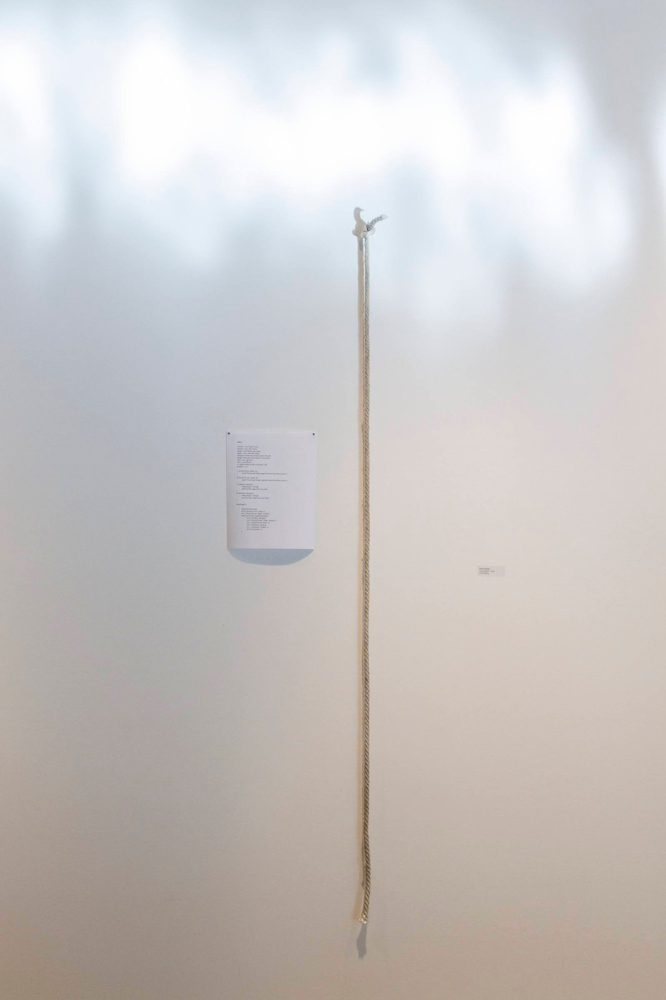
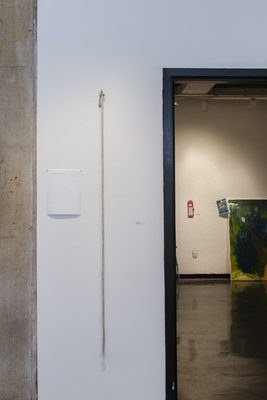

Instruction Piece / Interactive Installation
2014
Rope
Written pseudocode instructions
Art / Interactive
run fiddle 1 is an instruction piece. A length of rope hangs from the wall, and beside it a short block of pseudocode says exactly how to fiddle with it: pick the rope up, pinch it between the thumb and index finger so the fingers make a ring, and pull it back and forth, left and right, letting it slide through that ring.
A second rope hangs mirrored on the opposite side of the room, so the work is really two pieces facing each other. Each rope is the same set of instructions, run from opposite ends.
The piece comes out of an interest in the conceptualists and modernists, especially Sol LeWitt and Marcel Duchamp. In LeWitt's wall drawings the idea is the work and the instructions make it; here the viewer is the one who executes them. The title treats the fiddling as a small program: run fiddle 1.

